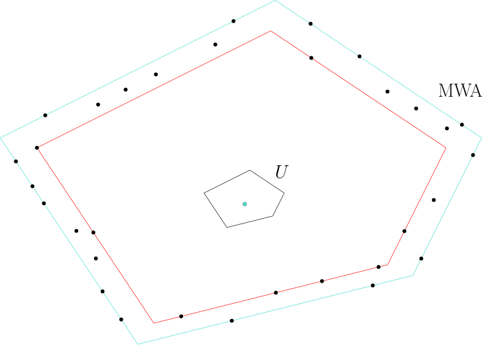

About a year ago, I wrote a blog post about some computational solutions that have been proposed to create a more ethical diamond supply chain. Over the last year, I collaborated with some brilliant people to analyze and propose these solutions. We mainly focused on the process of comparing two different scans of diamonds.
Throughout the diamond manufacturing process, the diamond is mined, polished, and carved often in different locations before it is finally sold to customers. When the diamond transitions between steps, it is often transferred to a new location. One step of interest is to verify that the correct diamonds have been transferred between each location, to make sure the diamond is properly tracked along the supply chain. From our market research, it appears that organizations like Tracr use machine learning techniques to automate this matching process.
In our recent work which can be viewed here, we analyze this problem from the perspective of computational geometry and propose an approximation algorithm to match two scans of diamonds to the desired precision. I’ll give a quick overview of the methods we used, and some of the challenges that we leave open for future exploration.
The Problem
The problem setting we consider is the following: After the necessary processing is completed at location A, we are given a polyhedron C that represents the processed diamond. We are also given a set of points S generated by scanning the same diamond once it arrives at location B. Can you verify that point set S has shape C?
Below is a sketch of an example instance of the problem in two dimensions.
There’s a body of work that offer solutions to a slight variation of this problem known as point-set registration. In this instance, instead of a polyhedron at location A, we are given another set of points, and we want to compute a translation that aligns these two point sets as best as possible. There are many brilliant algorithms that you can read more about on the linked Wikipedia page and perform very well in practice, but none of these offer theoretical guarantees about performance.
There’s also a lot of theoretical work about a specific instance of this problem, where instead of a polyhedron you’re given a circle or a sphere, and you want to find the best fitting one for your set of points. However, there has surprisingly not been much work when considering a polyhedron and a set of points. It turns out it is very challenging to handle the degrees of freedom present in the set of points as well as the possible polyhedra that could be given to you. In this work, we simplified the problem to just look at convex polyhedra.
Our Tools
I won’t dive into the details of the algorithm here, but introduce a few tools we used that I found to be very interesting and fun to work with. Polygons and polyhedrons can be defined in many different ways mathematically, but the way we decided to represent them is using what’s called the polyhedral distance function. (The problem is of primary interest in three dimensions, but we also provide a two-dimensional solution and so most figures will use two dimensions. These ideas aren’t hard to generalize to higher dimensions but are much clearer in two dimensions when drawing them. As such, when I use ‘polyhedron’ in the below explanation, this is interchangeable with ‘polygon’ for the two-dimensional case.)

Polyhedral Distance Function
In simple terms, this distance function has a reference “unit ball” of the polyhedron of interest with a center. It then measures the distance between points p and q by first placing the unit ball centered at p, then returning how much you have to scale the unit ball to touch the point q. This distance function doesn’t necessarily have all the “nice” properties mathematicians want in their distance functions, but it works great in a computational setting.
With our mathematical definition of the polyhedron in hand, our algorithm computes the C-shaped minimum width annulus (MWA) of the point set S. Our reasoning for this is that if the two scans indeed represent the same diamond, the minimum width annulus should have a width very close to zero, thus providing a good metric for determining the similarity between the two objects.

Minimum Width Annulus
The MWA is defined as the concentric placement of two copies of the polyhedron such that all the points in the scan lie in between the two scans, such that the difference in polyhedral distance from the center to the two placements is minimized.
Future Directions
In our paper, we introduce approximation algorithms to solve this problem in a few different settings (eg. is rotation required?) in two and three dimensions. We do this first by noticing that the search region in the middle can be narrowed down systematically to yield an efficient algorithm, even for high levels of precision. The rotation case turns out to be slightly more demanding, and we imagine there are ways to improve our method in this domain.
An interesting direction that can also be explored is the notion of Voronoi diagrams for convex polyhedral distance functions. It turns out the standard Voronoi diagram represents the exact solution to this problem in the case that the shape given is a circle or sphere. We imagine a similar property holds for polygons and polyhedra, but there is a lot we don’t quite understand about Voronoi diagrams for these distance functions.